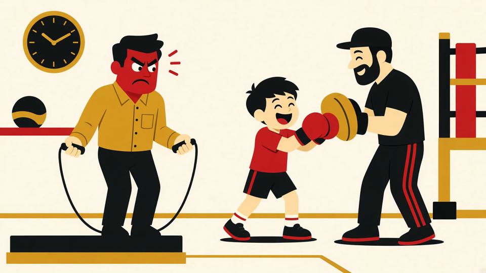

Польза бокса · 28.10.2026

В восемь вечера в зал заходит мужик в офисной рубашке, переодевается и через десять минут уже красный как помидор. Он только прыгал на скакалке. Три раунда по две минуты. На третьем он смотрит на часы так, будто они его лично обидели.
Рядом семилетка в перчатках размером почти с голову лупит по лапам и хохочет. Ему не тяжело. Ему весело.
Вот это и есть бокс. Один и тот же зал, одна и та же скакалка, а польза у каждого своя.
Самый частый вопрос от новичка: «А меня сразу в спарринг поставят?» Нет. Большинство людей приходят в бокс и годами не выходят на ринг. Им это и не нужно.
Тренировка в зале это в первую очередь работа над собой. Разминка, бой с тенью, мешок, лапы, немного физики в конце. Партнёр по спаррингу появляется тогда, когда ты сам этого захочешь и когда тренер увидит, что ты готов. Не раньше.
Так что если тебя останавливает страх получить по лицу в первый же вечер, выдыхай.
Раунд в боксе длится три минуты, перерыв минута. Звучит смешно, пока не попробуешь. За эти три минуты работают ноги, корпус, плечи, и всё это одновременно. Сердце разгоняется, дыхание сбивается, а остановиться нельзя: ты же в стойке, ты же боксёр.
Через месяц-другой регулярных тренировок обычно замечаешь простые вещи. По лестнице на пятый этаж поднимаешься и не пыхтишь. Плечи перестают быть каменными после рабочего дня за ноутбуком. Спина держится ровнее, потому что в стойке иначе никак.
И отдельный бонус, о котором редко говорят. После часа работы на мешке голова становится удивительно пустой. В хорошем смысле. Все претензии к начальнику, пробкам и курсу валют остаются где-то в районе третьего раунда.
Первая: пытаться ударить сильно. Новичок вкладывает в каждый удар всю обиду на жизнь, через пять минут у него горят плечи и болят запястья. Сила в боксе приходит из ног и разворота корпуса, а не из злости. Сначала техника, потом скорость, мощность появится сама.
Вторая: задерживать дыхание. На каждом ударе нужен короткий выдох, «тс» сквозь зубы. Кто не дышит, тот сдыхает к середине тренировки.
Третья: ходить раз в две недели и ждать результата. Два-три раза в неделю дают заметную разницу. Раз в месяц даёт только крепатуру, каждый раз как в первый.
С детьми всё немного иначе. Ребёнку не нужно объяснять, зачем двигаться. Ему нужно, чтобы было интересно.
Хорошая детская тренировка по боксу похожа на игру с правилами. Догонялки, реакция на хлопок, удары по лапам на счёт, прыжки через скакалку. Параллельно ребёнок учится вещам, которые потом пригодятся везде: стоять ровно, слушать тренера, ждать своей очереди, проигрывать и не реветь, выигрывать и не задирать нос.
Родители часто боятся, что бокс сделает ребёнка агрессивным. На практике обычно наоборот. Ребёнок, который два раза в неделю выплёскивает энергию на мешок, дома спокойнее. А тот, кто знает, что умеет постоять за себя, реже лезет доказывать это во дворе. Ему незачем.
В клубе «Золотые перчатки» детей берут с четырёх лет. В таком возрасте никто никого не бьёт. Учатся координации, равновесию и тому, что левая рука это левая, а не «вот эта».
Тогда тем более. Бокс отлично масштабируется. Никто не заставит тебя работать как кандидат в мастера. Темп, количество раундов и нагрузку тренер подбирает под тебя. Хочешь просто держать себя в форме и выпускать пар, пожалуйста. Хочешь через год выйти на любительский турнир, тоже можно, только будь готов пахать.
Единственное правило: если есть проблемы с давлением, сердцем или суставами, сначала к врачу. Это не формальность, это нормальный взрослый подход.
Найди зал, где есть пробная тренировка, и просто приди. В спортивной форме, с водой и полотенцем. Перчатки на первый раз обычно дают в зале. Сравнивать себя с теми, кто ходит третий год, не надо. Они тоже когда-то краснели на скакалке.
Бокс не обещает тебе кубиков пресса через неделю. Он обещает, что каждый раз после тренировки ты будешь уставшим и почему-то довольным. Странная штука, но работает.
Живёшь в Перми — приходи на пробную в «Золотые перчатки»: vk.com/goldenglovesperm